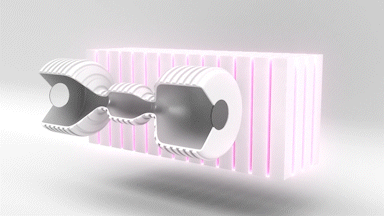
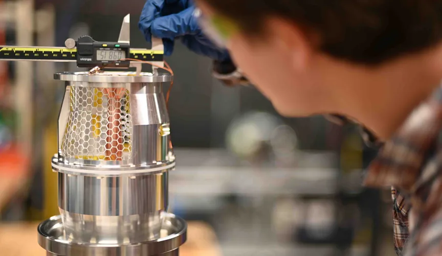
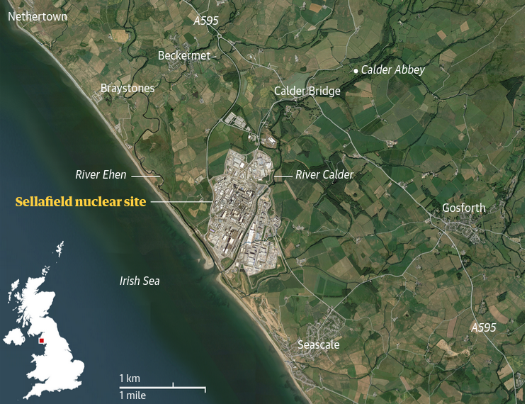

17 Nuclear
17.1 COP28 Tripple Nuclear by 20250
Wesoff
At COP28, many major players are banding together to plan a big ramp-up of nuclear power. But without China’s help, is the target realistic?
Today’s global fleet of approximately 440 nuclear reactors has a combined capacity of around 400 gigawatts — enough that nuclear energy provides about 10 percent of the world’s power. But less than a paltry 4 gigawatts of nuclear energy has been connected to the grid in 2023. The global solar industry is forecast to install more than 400 gigawatts of capacity in 2023 alone.
The goal of tripling the world’s nuclear output would require deploying an average of 40 gigawatts of nuclear power every year through 2050, according to the World Nuclear Association. (My back-of-the-envelope calculations point to an even higher number if replacing existing aged-out equipment is included in the mix.)
The pledge also asks the signees to consider smaller and more innovative reactor designs in their grid planning and makes an appeal that they continue to maintain the existing reactor fleet, extending its lifetime if feasible and safe.
Over the past few decades, the hefty price tag of building nuclear plants has been the industry’s Achilles’ heel. This poses particular challenges in market-based economies, where periods of high interest rates and inflation threaten the viability of mega projects.
Ironically absent from the pool of signees is China, the only country with any real chance of meeting the COP goal. China aims to double its nuclear energy capacity by 2035 and is well on its way; as of this year, 22 nuclear plants are under construction in China with more than 70 planned.
Perhaps the emphasis on nuclear at this year’s meeting reinforces the idea that we’re in the midst of a generational shift in sentiment about atomic power.
Wesoff (2023) 20-plus countries pledge to triple the world’s nuclear energy by 2050
17.2 Nuclear Dilemma
Beslik
The nuclear dilemma.
Nuclear power is dead. Long live nuclear power. Nuclear power is the only way forward. Nuclear power is too dangerous. Nuclear power is the safest power source around. Nuclear is nothing. Nuclear is everything.
When I started looking at this I was stunned by how the same numbers and indicators can be interpreted in so fundamentally different ways.
The same basic data set – nuclear plants currently in existence, those under construction, the status of new technologies, the history of costs and delays, and a few striking accidents – produces totally contradictory opinions and predictions.
Nuclear power is a Rorschach test: You see what you want to see, a rosy nuclear future or an old-world dinosaur in a slow-death spiral. It’s a reflection of your own views on the energy present and future.
In all likelihood, no one will be proven right or wrong for decades.
The state of nuclear power
Nuclear power today accounts for around 10 percent of the total electricity generation around the world.
This varies sharply by country. In the U.S. the rate is about 20 percent, in Russia and Germany it is a bit lower than that, while some other European countries get 40 and 50 percent from nuclear reactors.
France has long led the way proportionally, at more than 70 percent (it has the second most total reactors, behind the U.S.). China, though building rapidly, drew less than 3 percent of its power from nuclear in 2014.
There are 442 reactors currently in operation globally, and the International Atomic Energy Agency says that 66 are currently under construction. Twenty-four of those are in China; no other country is currently building more than eight.
Read more here
and here.
In general, the more experience accumulated with a given technology, the less it costs to build. This has been dramatically illustrated with the falling costs of wind and solar power.
Nuclear, however has bucked the trend, instead demonstrating a sort of “negative learning curve” over time.
The nuclear industry’s main hope for future expansion lies in a new generation of small modular reactors (SMRs) that generate less than 300 MW each and are amenable to assembly-line construction.
These are still under development, however, with none licensed or under construction.
In the U.S. nuclear power generates as much as $50 billion each year from electricity sales and revenue, and provides around 100,000 jobs.
A handful of companies and governments are working to develop small-scale nuclear reactors (SMRs) that proponents say are safer, cheaper, and more compatible with renewables than traditional nuclear power.
But critics contend the new technology doesn’t address concerns about safety and radioactive waste.
Small modular reactors suffer from many of the same problems as large reactors, most notably safety issues and the unresolved problem of what to do with long-lived radioactive waste. And opponents say that even in a smaller form, nuclear power is expensive — it’s one of the costliest forms of energy, requiring substantial government subsidies to build and run, not to mention insure.
In 80-odd years of nuclear power, in which more than 450 commercial reactors, many experimental stations and tens of thousands of nuclear warheads have been built, great stockpiles of different levels of waste have accumulated.
About 0.2–3% by volume is high-level waste. Mostly derived from civil reactor fuel, this is some of the most dangerous material known on Earth, remaining radioactive for tens of thousands of years. It requires cooling and shielding indefinitely and contains 95% of the radioactivity related to nuclear power generation.
Further 7% or so by volume, known as intermediate waste, is made up of things like reactor components and graphite from reactor cores. This is also highly dangerous, but it can be stored in special canisters because it does not generate much heat.
Around 22,000 cubic meters of solid high-level waste has accumulated in temporary storage but not been disposed of (moved to permanent storage) in 14 western countries, along with unknown amounts in China, Russia and at military stations.
A further 460,000 cubic meters of intermediate waste is being stored, and about 3.5 million cubic meters of low-level waste.
Some 34,000 cubic meters of new high-level and intermediate waste is generated each year by operating civil reactors,
The bitter reality is that there is no scientifically proven way of disposing of the existential problem of high- and intermediate-level waste. The truth is that whatever efforts are made to bury and forget it, it will not go away.
Nuclear stands for 10% of world energy supply.
17.3 Fukushima
Release of radioactive waste into sea
Japan has announced it will release more than 1m tonnes of contaminated water from the wrecked Fukushima nuclear power plant into the sea, a decision that has angered neighbouring countries, including China, and local fishers.
Official confirmation of the move, which came more than a decade after the nuclear disaster, will deal a further blow to the fishing industry in Fukushima, which has opposed the measure for years.
The prime minister, Yoshihide Suga, told a meeting of ministers on Tuesday that the government had decided that releasing the water into the Pacific Ocean was the “most realistic” option, and “unavoidable in order to achieve Fukushima’s recovery”.
The plant’s operator, Tokyo Electric Power [Tepco], and government officials say tritium, a radioactive material that is not harmful in small amounts, cannot be removed from the water, but other radionuclides can be reduced to levels allowed for release.
China denounced the plan as “extremely irresponsible”, and accused Japan of reaching the decision “without regard for domestic and foreign doubts and opposition”.
“This approach is extremely irresponsible and will seriously damage international public health and safety and the vital interests of the people of neighbouring countries,” the Chinese foreign ministry said in a statement on its website.
South Korea summoned Japan’s ambassador, Koichi Aiboshi, the broadcaster YTN reported, while a high-level government official said Seoul “firmly opposes” the move, a view also expressed by Taiwan’s Atomic Energy Council.
The US was supportive, describing Japan’s decision-making process as “transparent”.
The announcement drew swift condemnation from environmental groups.
About 1.25m tonnes of water has accumulated at the site. It includes water used to cool the plant, as well as rain and groundwater that seeps in daily.The radioactive water, which increases in quantity by about 140 tonnes a day, is now being stored in more than 1,000 tanks, and space at the site is expected to run out around next autumn.
The International Atomic Energy Agency supports the decision, since radioactive elements, except tritium, will be removed from the water or reduced to safe levels before it is discharged. The IAEA has also pointed out that nuclear plants around the world use a similar process to dispose of wastewater.
Experts say tritium is only harmful to humans in large doses and with dilution the treated water poses no scientifically detectable risk.
Local fishing communities say the water’s release will undo years of hard work to rebuild consumer confidence in their seafood.
Japanese officials have objected to media descriptions of the water as “contaminated” or “radioactive”, insisting that it be described as “treated”.
Shaun Burnie, senior nuclear specialist with Greenpeace East Asia, said that claim was “clearly false”. “If it was not contaminated or radioactive they would not need approval (to release the water) from Japan’s nuclear regulator,” he said. “The water in the tanks is indeed treated, but it is also contaminated with radioactivity. The Japanese government has been deliberately seeking to deceive over this issue, at home and abroad.”
17.4 James Hansen’s Position
James Hansen obviously thinks climate cannot be saved without nuclear power
Development and deployment of 4 th generation nuclear power to the point that modular nuclear reactors provide electricity cheaper than coal. By 4 th generation I refer to all modern passively-safe reactors, whether thorium or uranium fueled – even nuclear fusion, which at long last is now closer than 50 years away.
The preposterous fear of nuclear waste from power plants – which is held in containers where it harms nobody – is hyped, while poorly-contained waste from other energies is ignored. Waste from heavily-subsidized fossil fuels is spewed in the air freely. About 20,000 people per day die of outdoor and indoor air pollution – much of that pollution being waste from fossil fuel combustion. People drop like flies from that pollution – more than are killed by pandemics and wars combined – but politicians pay little heed.
Even 2 nd generation nuclear power plants can be operated safely. The one serious accident in the U.S. – at Three-Mile Island – caused no deaths. Modern nuclear reactors that shut down in case of an anomaly and cool the nuclear fuel without need for external power are our safest energy. Neither the Chernobyl nor Fukushima accidents would have occurred with modern nuclear power.
Passive safety features are available that allow reactor shutdown and cooling without external power or operator intervention.
[James Hansen: Planet.Chapter47]
17.5 Fusion - ITER
ITER was set in motion at the Geneva Superpower Summit in November 1985, when the idea of a collaborative international project to develop fusion energy for peaceful purposes was proposed by General Secretary Gorbachev of the former Soviet Union to US President Ronald Reagan.
The People’s Republic of China and the Republic of Korea joined the Project in 2003, followed by India in 2005. Selecting a location for ITER was a lengthy procedure that was concluded in 2005, when the ITER Members unanimously agreed on the site proposed by the European Union. The ITER installation would be built near Aix-en-Provence in southern France.
More than 200 tokamaks around the world have paved the way to the ITER experiment.
Conceived as the last experimental step to prove the feasibility of fusion as a large-scale and carbon-free source of energy, ITER will be the world’s largest tokamak, with ten times the plasma volume of the largest tokamak operating today.
17.6 Fusion - Helion
Nuclear Fusion without Steam
Kamps
Fusion energy has been a fiery dream for lovers of clean energy since the first controlled thermonuclear fusion reaction was accomplished some 60 years ago. The technology promises all the benefits of current-generation nuclear fission generators, at a fraction of the risk, with far less radioactivity when running, and with very little radioactive waste. There’s been one catch: So far, it has been hard to get the fusion process to generate more energy than it has been consuming to keep the reaction under control.
Helion, as a company, has been focusing less on fusion as a science experiment and more on a more important question: Can their technology generate electricity at a commercial and industrial scale?
Some projects in the fusion space talk about heat, or energy, or other things. Helion is focused on electricity generation.
We are building systems that are about the size of a shipping container and that can deliver industrial-scale power — say on the order of 50 megawatts of electricity.

Fig: Deuterium and Helium-3 are heated, then accelerated through magnets, compressed and captured as inductive current. Animation courtesy of Helion Energy.
June of this year, Helion published results confirming it had become the first private fusion company to heat a fusion plasma to 100 million degrees Celsius, an important milestone on the path to commercial electricity from fusion. Soon after, the company announced it had broken ground on building its factory to start the process of preparing for manufacturing of its seventh-generation fusion generator, which the company calls “Polaris.”
TechCrunch was surprised to learn of the company’s $1.5 million round back in 2014, when the company said it would be able to get net power generation of fusion up and running within three years. Here we are seven years later, and it appears that Helion hit a couple of wobbles — but the company also found a focus along the way.
We ended up pivoting a little bit in direction, to focus less on scientific milestones of energy and focus more specifically on electricity. We had to prove some of the technologies on the electricity, and electricity extraction side of things.
At 50 megawatts, the generators could power around 40,000 homes, and with that amount of power, the technology could open some really interesting opportunities for distributed power grids.
One interesting innovation in Helion’s power generation solution is that it doesn’t use water and steam as intermediary steps in the power generation. Instead of going via water, the company decided to skip a step and use inductive energy instead. The company is aiming to be able to generate more electricity than what it takes to run the fusion reactor by 2024.
17.7 Fusion - Tiny
Wesoff
The startup is spurning room-sized reactors in favor of a small, modular design. But it’s unclear when or if fusion technology — large or small — will pan out.
To achieve fusion, hydrogen must be converted into plasma, a transformation that requires million-degree temperatures, much hotter than the core of the sun. In the medium of the plasma, negatively charged electrons separate from positively charged atomic nuclei.
Fusion machines compress and confine the plasma in order to push the freed-up nuclei so close together that they overcome repellant electrostatic forces and ultimately fuse. This process releases neutrons, and it’s this energy that scientists dream of harvesting to do things like drive a conventional turbine.
The holy grail for the fusion entrepreneur is a process that creates more energy than is needed to power it, also called net energy or positive output. A number of deep-tech startups are inching closer to this dream of prodigious energy at low cost. But right now, more energy is required to catalyze fusion than results from the process — a lot more.
Many fusion startups use magnetic confinement of the plasma, where the plasma is stabilized by massive magnets and heated to extraordinary temperatures so the nuclei can fuse. Instead of magnets, Avalanche’s electrostatic approach relies on very high voltages. The startup’s prototype uses electrostatic fields to trap ions, while also employing a magnetron electron confinement technique to reach higher ion densities and increase the incidence of fusion reactions. If Avalanche can get the voltages and ion densities optimized, the resulting fusion reaction will produce neutrons that can be transformed into heat.
That’s a big if. But this week, the company said it made significant progress on one piece of the puzzle.

“For us, the metric is voltage, and we need to get to 300 kilovolts to get to the optimum fusion energy in our device. We hit 200 kilovolts in our lab, which is a big deal — getting that much voltage into a 12-centimeter-diameter tube,” said Langtry.
“The next big milestone we’re hopefully announcing in a year or two is that we are able to densify this plasma not only at the right energy, but at densities where it’s interesting for energy generation,” he added. “We’ve got a lot of work to do.”
The company emphasizes that its reactor’s component parts are already commercially available: Its magnetron is a variation of a microwave-oven component, and its electrostatic base technology is a derivative of another existing product.
Riordan contends that Avalanche’s small scale differentiates it from other larger players in the space. The company doesn’t need a billion to make progress; it can do a lot with millions.
He said the company will initially focus on hard-to-decarbonize sectors and niche uses of its tech. “We’re not trying to do grid-scale energy,” Riordan told Canary last year. “There’s a whole realm of industries that need to be decarbonized: long-distance trucking, aviation, maritime — huge carbon sources.”
As cost comes down, markets will open up, said Langtry.
“We do think space and defense is probably the first application for what we’re trying to do,” said the CEO.
Wesoff (2023) Avalanche raises $40M to pursue vision of tiny nuclear fusion reactor
17.8 Fusion - Neither clean nor cheap
Jassby
The harsh realities of fusion belie the claims of its proponents of “unlimited, clean, safe and cheap energy.” Terrestrial fusion energy is not the ideal energy source extolled by its boosters, but to the contrary: It’s something to be shunned.
Fusion reactions in the sun burn ordinary hydrogen at enormous density and temperature, sustained by an effectively infinite confinement time, and the reaction products are benign helium isotopes. Artificial (terrestrial) fusion schemes, on the other hand, are restricted to much lower particle densities and much more fleeting energy confinement, and are therefore compelled to use the heavier neutron-rich isotopes of hydrogen known as deuterium and tritium—which are 24 orders of magnitude more reactive than ordinary hydrogen.
This gargantuan advantage in fusion reactivity allows human-made fusion assemblies to be workable with a billion times lower particle density and a trillion times poorer energy confinement than the levels that the sun enjoys.
Unlike what happens in solar fusion—which uses ordinary hydrogen—Earth-bound fusion reactors that burn neutron-rich isotopes have byproducts that are anything but harmless: Energetic neutron streams comprise 80 percent of the fusion energy output of deuterium-tritium reactions and 35 percent of deuterium-deuterium reactions.
An energy source consisting of 80 percent energetic neutron streams may be the perfect neutron source, but it’s truly bizarre that it would ever be hailed as the ideal electrical energy source. In fact, these neutron streams lead directly to four regrettable problems with nuclear energy: radiation damage to structures; radioactive waste; the need for biological shielding; and the potential for the production of weapons-grade plutonium 239.
If fusion reactors are indeed feasible—as assumed here—they would share some of the other serious problems that plague fission reactors, including tritium release, daunting coolant demands, and high operating costs.
There will also be additional drawbacks that are unique to fusion devices: the use of a fuel (tritium) that is not found in nature and must be replenished by the reactor itself; and unavoidable on-site power drains that drastically reduce the electric power available for sale.
All of these problems are endemic to any type of magnetic confinement fusion or inertial confinement fusion reactor that is fueled with deuterium-tritium or deuterium alone. (As the name suggests, in magnetic confinement fusion, magnetic and electrical fields are used to control the hot fusion fuel—a material that takes an unwieldy and difficult-to-handle form, known as a plasma. In inertial confinement, laser beams or ion beams are used to squeeze and heat the plasma.)
The deuterium-tritium reaction is favored by fusion developers because its reactivity is 20 times higher than a deuterium-deuterium fueled reaction, and the former reaction is strongest at one-third the temperature required for deuterium-only fusion. In fact, an approximately equal mixture of deuterium and tritium may be the only feasible fusion fuel for the foreseeable future. While deuterium is readily available in ordinary water, tritium scarcely exists in nature, because this isotope is radioactive with a half-life of only 12.3 years. The main source of tritium is fission nuclear reactors.
The tritium consumed in fusion can theoretically be fully regenerated in order to sustain the nuclear reactions. To accomplish this goal, a lithium-containing “blanket” must be placed around the reacting medium—an extremely hot, fully ionized gas called a plasma. The neutrons produced by the fusion reaction will irradiate the lithium, “breeding” tritium.
To make up for the inevitable shortfalls in recovering unburned tritium for use as fuel in a fusion reactor, fission reactors must continue to be used to produce sufficient supplies of tritium—a situation which implies a perpetual dependence on fission reactors.
In addition to the problems of fueling, fusion reactors face another problem: they consume a good chunk of the very power that they produce, or what those in the electrical generating industry call “parasitic power drain,” on a scale unknown to any other source of electrical power. Below a certain size (about 1,000 MWe) parasitic power drain makes it uneconomic to run a fusion power plant.
The problem of neutron-degraded structures may be alleviated in fusion reactor concepts where the fusion fuel capsule is enclosed in a one-meter thick liquid lithium sphere or cylinder. But the fuel assemblies themselves will be transformed into tons of radioactive waste to be removed annually from each reactor. Molten lithium also presents a fire and explosion hazard.
If reactors can be made to operate using only deuterium fuel, then the tritium replenishment issue vanishes and neutron radiation damage is alleviated. But the other drawbacks remain—and reactors requiring only deuterium fueling will have greatly enhanced nuclear weapons proliferation potential.
Jassby (2017) Fusion reactors: Not what they’re cracked up to be
17.9 Thorium
Tekna Energibloggen
Norge har atter engang trukket vinnerloddet! Vi sitter på nok thorium til å erstatte all norsk energiproduksjon i over 2000 år. Dette er også en teknologi som kan kutte alle utslipp fra store skip og kutte kostnadene samtidig. Norge kan således også ta igjen vårt tapte marked innen deep-sea og større skip, generelt. Mulighetene er enorme, men det kommer ikke av seg selv.
Saltsmeltereaktorer
Foredraget handler blant annet om en teknologi innen kjernekraft – saltsmeltereaktorer – som ble først utviklet på 1960-tallet men lagt i skuffen under den kalde krigen da teknologien ikke produserte materialer for våpen. Dette skjedde til tross for at det amerikanske kjernekraftkommisjonen anså dette som en meget lovende teknologi, og 3 år med feilfri drift av en prototype bekreftet dette – den har faktisk ingen av de risikoelementene vi tradisjonelt forbinder med kjernekraft. Teknologien er også mye billigere enn tradisjonelle kjernekraftverk og den er mye enklere å skalere fra smått til stort. Dessverre ble teknologien ansett for å ikke ha noen sikkerhetspolitisk betydning og lagt i skuffen, men etter 9/11 ble denne teknologien tatt frem fra støvet igjen av samme grunn – trygghet og ikke-spredning. I dag er teknologien en av de mest innovative teknologiene som finnes innen energiområdet. Dette er reaktorer som kan bygges så små som 1 MW men også så store som 3.000 MW, og blant de 67 forskjellige små reaktordesignene som nå utvikles, er saltsmeltereaktorer en av de mest interessante. Det er fordi saltsmeltereaktorer kan løse verdens utslippsproblematikk svært kostnadseffektivt med forventet kostnadsnivå på kun 25 øre/kWh, der er ingen risikoelementer som man tradisjonelt forbinder med kjernekraft, og den har lave investeringskostnader.
17.10 Melted Salt Reactors
Seaborg
I utgangspunktet vil Seaborg bruke et uranbrensel som kalles HALEU – High-assay low-enriched uranium. Det inneholder mellom 5 og 20 prosent U235.
Vi vil blande uranet med fluor og lage urantetrafluorid, som vi så blander med andre salter basert på Na og Ka. De vil senke smeltepunktet til rundt 500 grader. Den høye berikningen av U235 er kostbar, men vi slipper å bruke brenselstaver, som er veldig kostbart.
På grunn av den høye temperaturen i det smeltede saltet kan reaktorene produsere en variabel kombinasjon av strøm og varme eller produsere hydrogen.
Det er i selve reaktoren at atomreaksjonen finner sted og varmen genereres. Den hentes ut via varmeveksling til nok en saltkrets som ikke inneholder radioaktive stoffer. Så varmeveksles den videre til en vannkrets med 200 bars trykk som produserer damp til en turbin som driver en generator. Alternativt kan energien tas ut som varme, eller noe midt imellom.
Når reaktoren er fylt med det radioaktive saltet, vil den kunne gå kontinuerlig i tolv år uten tilførsel av mer saltbrensel. Da er det meste av det fissile materialet brukt opp, og resten vil være resirkulerbart. Det vil si at det kan gjenbrukes i en annen reaktor slik at mer energi kan hentes ut. Avfallets behov for lagringstid blir redusert til 300 år. I forhold til det som skal lagres, er det veldig små volumer sammenlignet med energien som produseres. Og den raske halveringstiden gjør lagringen enklere.
Sammenlignet med tradisjonelle reaktorer er Seaborgs anlegg mye enklere, og de slipper kravene til kompliserte sikkerhetssystemer som driver opp prisen på konvensjonelle kjernekraftverk.
I stedet for å bruke grafitt som moderator, bruker vi natriumhydroksid. Reaktoren har en driftstemperatur på i underkant av 600 grader. Det er ideelt til dampproduksjon og gjør at de kan bruke standard dampturbiner. Hvis reaktoren skal produsere hydrogen, blir det veldig effektivt mellom 800 og 900 grader.
Selve reaktorkjernen er utformet som en sylinder med en diameter på to meter og høyde to meter. Når den er i drift må alt som inneholder oksygen holdes utenfor reaktoren.
Den flytende steinen som saltet i praksis er, krever høy temperatur for å være flytende. Skulle noe skje, vil det stivne under 490 grader. Reaktoren kan ikke smelte ned eller eksplodere eller lekke radioaktive gasser til luft eller vann. Og teknologien kan ikke brukes for å lage våpen.
Når saltet er flytende, er det også mulig å benytte såkalte ispropper, det vil si et materiale med høyere smeltepunkt. Skulle reaktortemperaturen blir for høy, vil proppen smelte og saltet renne ut i flere beholdere hvor kjernereaksjonene stopper.
Seaborg vil installere reaktorene på båter eller flåter. Det er plass til mellom to og åtte reaktorer i en flåte, hver reaktor er på 100 MW. På grunn av monteringen på flåter kan leveringstiden reduseres til tre år.
17.11 Uranium Supply Chain
Tooze
Rosatom: uranium supplier to the world
Unlike Western companies in the nuclear business, Rosatom is involved in every part of the supply chain, from ore extraction to fuel enrichment and delivery. The company is as much an expression of the Kremlin’s geopolitical power as a profit-generating business. That state-level commitment has played to Russia’s advantage. When international investors turned away from nuclear power following the Fukushima accident in 2011, some Western companies involved in the fuel cycle, including Avrea SA in France, the US Enrichment Co and Westinghouse Electric Co, went bankrupt. Russia stepped in, building market share not only among the world’s existing fleet of nuclear reactors, but by offering generous financing for new foreign projects. Today, Rosatom’s 330,000 workers provide fuel assemblies to scores of old reactors in eastern Europe and Russia, and is building 33 new power units in 10 countries, including China and India, that will be locked into fuel contracts for decades ahead.
Russia supplies almost as much enriched uranium to US reactors as the US generates itself;
17.12 SMR - Small Modular Reactor
Barnard
SMR doesn’t have the conditions for success to be built and scaled economically in the 21st Century, and wind, water, solar, transmission and storage do.
Nuclear energy and free markets aren’t compatible. Nuclear programs are state programs with subordinate corporate partnerships.
No country globally has the conditions for success for nuclear generation in the 21st Century. That was a Cold War era success story based on a hyperawareness of the threat of nuclear war which is vastly diminished in the age of trade.
What are small modular nuclear reactors?
The name kind of gives it away. The vastly majority of the 450 or so nuclear reactors in the world that are generating electricity that gets put into the grid are gigawatt scale. That’s because attempts in the 1950s and 1960s to generate electricity with the scale of reactors on nuclear subs and aircraft carriers found that they were really expensive at that size.
But gigawatt scale reactors are easy to turn into bespoke engineering megaprojects. Custom engineering for every site foregoes economies of manufacturing scale.
So the SMR crowd decided to ignore most of history’s lessons about both the scale of reactors for commercial success and the conditions for success and lean into tiny reactors and lots of numbers. The hope was that Wright’s Law — where every doubling of the number of manufactured items once in production manufacturing would bring cost per item down by 20% to 27% — would enable them to be manufactured and deployed cheaply. However, the doubling requires an awful lot of reactors, and only under the most unrealistically optimistic of scenarios are they in the price range of wind and solar today by 2040.
The last condition for success was repeating the deployment a bunch of times, but historically that’s been dozens, not thousands. Rigorously repeating deployment of the same proven design with skilled teams in a relatively short timeframe with lots of national control and military rigour isn’t a feature of the SMR bandwagon and proposals.
The SMR crowd think that there’s a free market friendly version of nuclear generation. They mostly ignore the seven layers of overlapping security required for any commercial nuclear generation solution. They ignore the thermal and hence cost efficiencies of scale. They ignore the advantages of proven, simpler technologies in favour of novelty. They ignore the lack of military interest in a modern strategic nuclear program. They ignore that they don’t have a major economy and geography backing a winner and forcing it to success, no matter what it costs. And clearly they don’t pay much attention to modern competitors like wind and solar energy.
There’s almost nothing new in the SMR technologies and designs by the way. Some of them were operational in labs in the 1950s. Most of the technologies were never commercialized anywhere despite various attempts. Their claims about being safer are pretty meaningless as passive safety features exist on lots of the operational GW scale reactors and no one is building unsafe reactors anymore.
One thing that is relatively new is that most or perhaps all of the designs require high assay low enrichment uranium (HALEU). That would be fine, except that Russia had effectively been ceded a monopoly on the supply chain for the fuel. The US DOE (again) has created a consortium model to try to create a reasonably large domestic supply of the material, well above the scale currently available domestically for laboratory reactors.
The Fukushima disaster, which will approach a trillion USD in economic and clean up costs for Japan by the time the dust has finally settled decades from now.
If SMRs made sense, existing nuclear power generation facilities are the place to build them. They are already at the centre of the seven overlapping layers of defence that nuclear generation sites require from the international, all supply and waste chains and the physical and electronic security of the facility itself.
Barnard (2023) What Drives This Madness On Small Modular Nuclear Reactors?
17.13 Nuclear Leaks and Waste
17.13.1 Sellafield
Isaac
Ministers who visit Sellafield for the first time are left with no illusions about the challenge at Europe’s most toxic nuclear site.
One former UK secretary of state described it as a “bottomless pit of hell, money and despair”, which sucked up so much cash that it drowned out many other projects the economy could otherwise benefit from.
Sellafield, a huge nuclear dump on the Cumbrian coast in north-west England, covers more than 6 sq km (2 sq miles). It dates to the cold war arms race, and was the original site for the development of nuclear weapons in the UK in 1947, manufacturing plutonium. It was home to the world’s first full-scale commercial nuclear power station, Calder Hall, which was commissioned in 1956 and ceased generating electricity in 2003.

Fig: Sellafield is at the heart of the so-called “nuclear coast” in West Cumbria, sandwiched between the Lake District national park and the Irish Sea. At its southern end, BAE Systems in Barrow-in-Furness builds nuclear submarines. Land neighbouring the site has long been earmarked for a new nuclear power station but plans for Moorside collapsed in 2018 when the Japanese conglomerate Toshiba walked away.
It has been at the centre of disaster and controversy, including the Windscale fire of 1957. The blaze was considered one of the worst nuclear incidents in Europe at the time, and carried a plume of toxic smoke across to the continent. The milk from cows on 200 sq miles of Cumbrian farmland was condemned as radioactive.
Sellafield began receiving radioactive waste for disposal in 1959, and has since taken thousands of tons of material, from spent fuel rods to scrap metal, which is stored in concrete silos, artificial ponds and sealed buildings. A constant programme of work is required to keep its crumbling buildings safe and create new facilities to contain the toxic waste. The site is expected to be in operation until at least 2130.
The estimated cost of running and cleaning up the site have soared. Sellafield is so expensive to maintain that it is considered a fiscal risk by budgetary officials. The latest estimate for cleaning up the Britain’s nuclear sites is £263bn, of which Sellafield is by far the biggest proportion. However, adjustments to its treatments in accounts can move the dial by more than £100bn, more than the UK’s entire annual deficit. The cost of decommissioning the site is a growing liability that does not count towards the calculation of the UK’s net debt.
The site has a workforce of 11,000, with its own railway, road network, laundry services for normal and potentially radioactive garments, and its own police force with more than 80 dogs. It has almost 1,000 buildings.
Sellafield’s impact on the environment has been a longstanding concern. Local animals, including swallows, have been found to carry radioactive traces from the site with them. Debate rages locally over just how toxic the “atomic kittens” – stray cats that inhabit the site – may be. Sellafield says cats are screened for radioactivity before they are rehomed.
The activities at the site are a matter of significant scrutiny to countries including the US, Norway and Ireland, given that Sellafield hosts the largest store of plutonium in the world and takes waste from countries such as Italy and Sweden.
Norwegians have long feared the effects of an accident at the site, with modelling suggesting that prevailing south-westerly winds could carry radioactive particles from a large incident at the site across the North Sea, with potentially devastating consequences for its food production and wildlife.
Norway and Ireland were involved in efforts to halt the release of technetium-99, a radioactive metal, into the sea by Sellafield. In 2003, Norway accused Sellafield of ruining its lobster business.